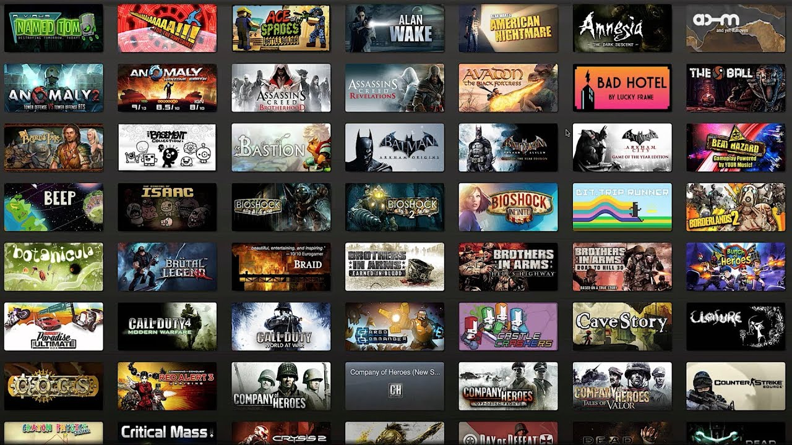
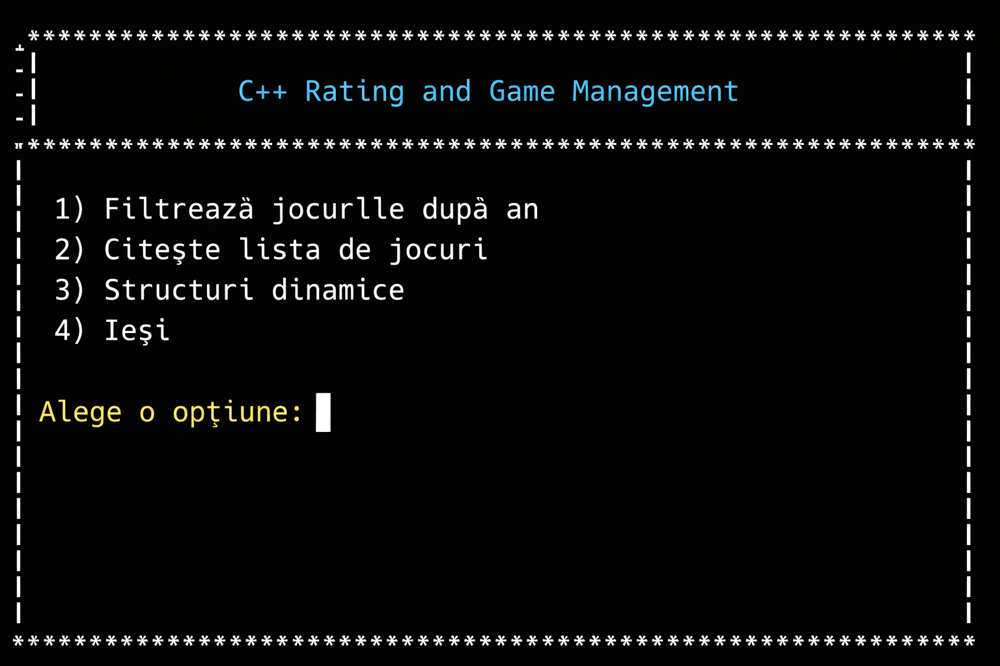

Afișare jocuri
Vizualizarea întregii colecții de jocuri stocate în listă.
Gestionarea unei colecții de jocuri video folosind liste dublu înlănțuite

Vizualizarea întregii colecții de jocuri stocate în listă.
Adăugarea de noi elemente în colecție în mod dinamic.
Eliminarea jocurilor din listă pe baza titlului.
Sortarea automată a jocurilor pentru o mai bună vizibilitate.
Calcularea ratingului maxim, minim și a mediei.
Găsirea jocurilor lansate după un anumit an calendaristic.
Importul automat al datelor din fișierul de intrare date.in.
Utilizarea eficientă a memoriei prin liste dublu înlănțuite.
Interacțiune simplă și intuitivă prin meniul de consolă.
Implementare robustă folosind standardele limbajului C++.

Acest proiect prezintă o aplicație realizată în limbajul C++ care permite gestionarea unei colecții de jocuri video folosind o listă dublu înlănțuită.
Programul citește datele dintr-un fișier, creează o structură de tip listă și oferă utilizatorului un meniu interactiv prin care poate realiza diverse operații asupra colecției de jocuri. Scopul proiectului este de a demonstra modul în care structurile de date dinamice pot fi folosite pentru organizarea și manipularea eficientă a datelor.
Aplicația oferă o gamă variată de operații pentru administrarea jocurilor.

Listele dublu înlănțuite permit inserări și ștergeri rapide în orice punct al colecției.
Calcularea automată a statisticilor despre ratingurile jocurilor oferă o imagine clară asupra colecției.

Găsirea jocurilor relevante pe baza anului de lansare facilitează explorarea bazei de date.